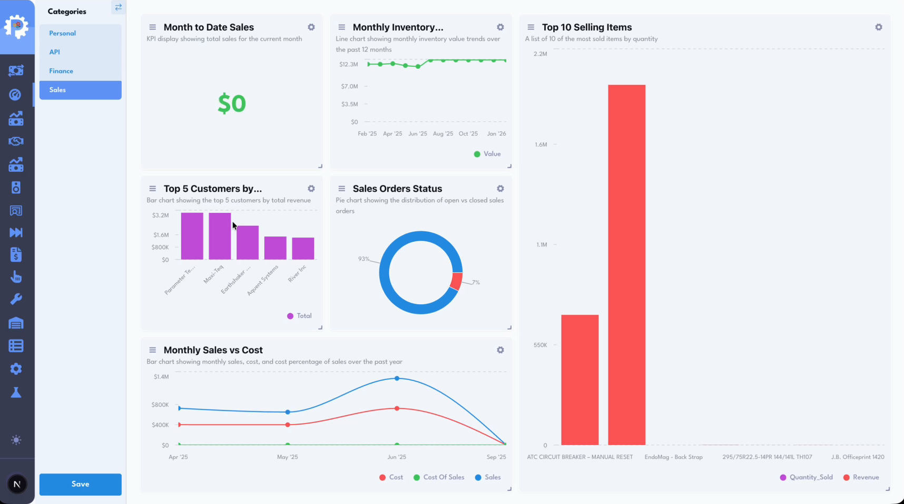
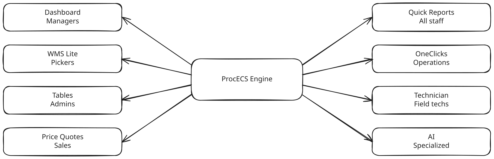
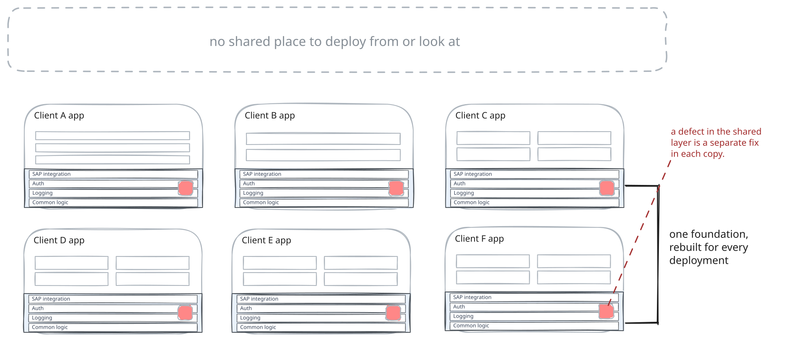
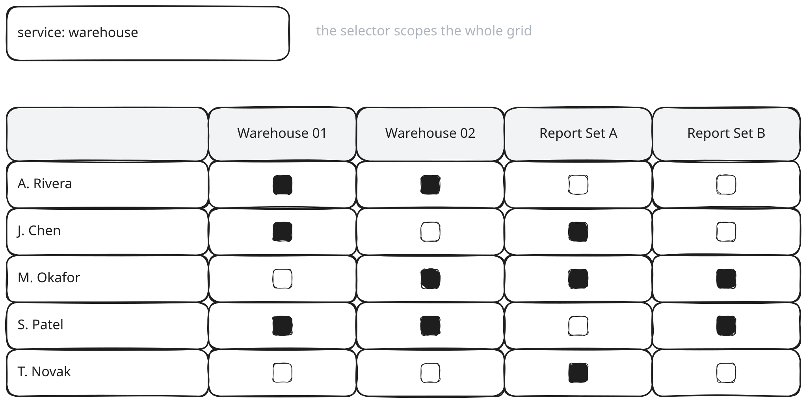
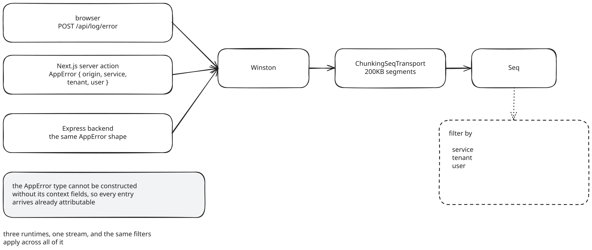
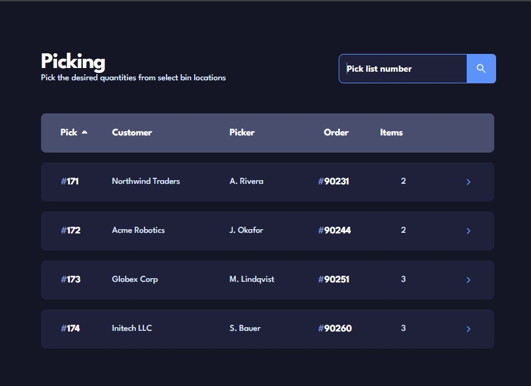
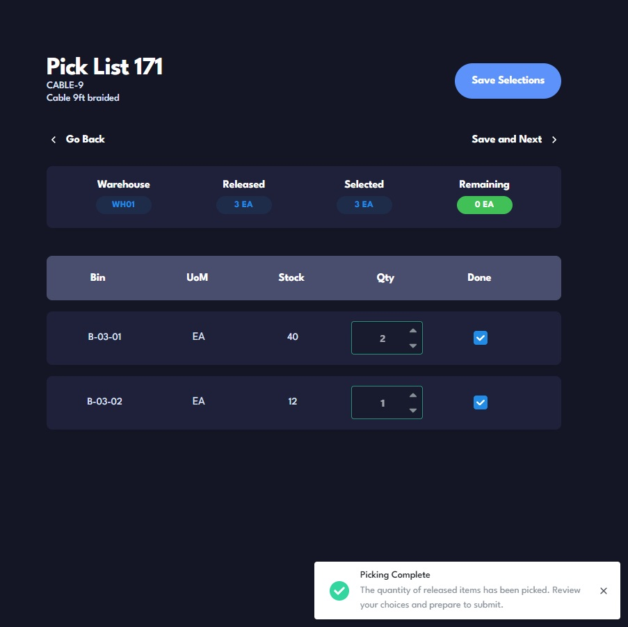
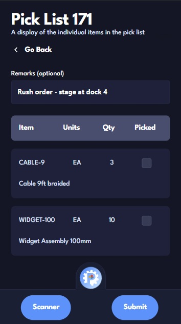
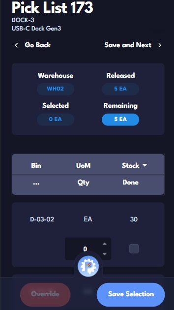

Table of Context
ProcECS Engine
Next.js / TypeScript / Express / Supabase / SAP HANA / SAP Service Layer / MSSQL / Redis / Docker / AWS Parameter Store / TeamCity / Winston / Seq
VISIT WEBSITEPart I
The Platform
The ProcECS Engine began as a ticket to modernise a single legacy service. After a week inside its code and perusing similar deployments the ticket looked like the wrong unit of work. What I proposed instead was one place for that service and the ones after it to run, operated centrally and pushed outward to every client. Moving from a copy per client to a single codebase puts the hard parts in the software, which tenant owns a request, what its user may do, and how one change reaches many isolated deployments at once. What follows are some of the challenges we faced and how we set about solving them.
Overview
ProcECS Engine is a multi-tenant portal that sits in front of SAP Business One (SAP B1). It is a heavy and extremely capable enterprise resource planning system. Its native client is a desktop application, its workflows assume an operator trained on them, and a large share of day to day tasks sit several menus deep or get handed to a consultant. It also gets slow. A large implementation with a handful of add-ons can turn a simple lookup into a wait. Small and medium businesses feel this quite deeply.
If you have used an ERP, you know the shape of this complaint already. If you have not, the short version is that the system can do almost anything and wants you to know exactly how before it will.
Whether someone holds a SAP licence is beside the point. The people who most need to act on the data, a technician in a truck, a salesperson mid-quote, an accounts clerk before month end, could each be given a seat, but the workflow behind that seat takes weeks to learn well enough to trust your own entries and months before confidence is assured, and most of these roles have no reason to climb that. It is easier to hand one kind of employee a tool scoped to their job than to seat them in SAP and then police the menus they should not open, the permissions they should not hold, and the records beyond their remit they could otherwise reach. An accounts team wants one screen that verifies transactions before month end, not the heavyweight modules alongside it, and it wants that screen to talk to the tools they already run, Salesforce or another outside API vendor, which SAP by itself will not.
Without a tool of that shape, the workarounds are predictable. Managers export data to spreadsheets because getting a live figure out of SAP is awkward. Reports are rigid, so a new one means a consultant engagement. A configuration change as small as adding a lookup table means opening the SAP client and knowing exactly where to go. Approvals that should take a click take a walk through several screens. Now none of these behaviors are caused by a defect in SAP, rather it is the cost of a general system being asked to serve narrow jobs in very specific ways. No business is the same and no business runs things in unified way, sometimes even across departments in the same organization.
That summary provides the purpose behind the ProcECS Engine. Each module on the platform takes one of those narrow jobs and gives it a modern, permission-gated interface hydrated with the client's live SAP data and backed by consultants with over two decades of experience.
| Module | Who uses it | What it solves |
|---|---|---|
| Dashboard | Managers, analysts | Live KPI dashboards where each widget is a stored SQL query. Your data, the way you want to see it, fast. |
| WMS Lite | Warehouse pickers, managers | Mobile guided picking, putaway, receiving, and inventory against SAP HANA. Replaces the printed pick sheet and dependence on a picker who has memorised the floor. |
| Tables | Administrators | Create and edit SAP User-Defined Tables through a form instead of the SAP client. Turns a consultant task into a self-service one. |
| Price Quotes | Sales, procurement | Build and manage sales quote documents that are integrated with Salesforce. |
| Quick Reports | All staff | Run pre-built parameterised reports against live SAP data without opening SAP or waiting on a report request. |
| OneClicks | Operations | Single-action approvals, such as releasing a batch of sales orders, without stepping through SAP screens. |
| Technician | Field technicians | Create, view and update service call tickets from a phone. This is the service that started the whole platform. |
These are just a fraction of the suite. Alongside these sit a set of AI-assisted tools for reconciliation and document processing, and a movable, resizable dashboard grid that each role gets tuned to what matters to them. Three kinds of user meet the platform day to day. Floor and occasional users need one screen to do one job, managers need to trust the figure in front of them, and administrators manage accounts, roles, and which tools a client can see.

This is the external 50,000 foot view of the platform. What it took to build sits underneath, and it starts with the delivery model it was meant to replace.
The Delivery Model
When I first began work as an intern, every client engagement produced a standalone application, built by hand for that client. At the scale of a single project that was sensible. The work was billed per project, so shipping quickly was the incentive, and no two clients shared a SAP install or a way of working, so a bespoke build was warranted. Every one of them made sense on its own.
There were around twenty clients, each running its own set of these tools. Two clients in the same industry asking for the same kind of tool still ran different businesses, so any two applications overlapped only in parts. What they did share sat underneath, the SAP integration, authentication, logging, and a handful of common business-logic routines, and that layer was written again from scratch for every engagement. The client paid for it, both in time and money.
The operational side was its own tax. Which client ran which tool at which version was tracked in a Notion table kept current by hand, large enough to fall behind reality. Logs and metrics were spread across as many deployments as there were engagements. An update was a small project on its own, and it reached one client at a time.
The cost hardest to bill for was knowledge. Each application could have its own stack at its own version, so a developer handed an update or a new feature spent the first stretch learning that application's requirements and its client's rules before making a confident change. The technician service that started this was an acute case. It had run without incident for three years, the engineer who wrote it had left, nobody remaining could say how it worked, and nobody wanted to be the one to touch it. Across twenty applications that ramp-up is a tax on every task, and a share of the estate is barely touched at all.
This was recognized waste and measures were being taken to create a shared "library of code" that engineers could draw from instead of rewriting the same pieces for each client. But with no standard for creating tools in a single language or tech stack, the gains could only go so far. And it did not change the rest, because every client still received a separately assembled application on its own deployment, so the version table, the scattered logs, and the one-at-a-time updates all stayed. The structural fix was to stop shipping separate applications and run one for everyone.

The platform is that structural fix. One codebase, operated centrally, deployed outward. Everything that follows in this part is a consequence of the choice, starting with what it takes to let many client organisations share one codebase safely.
One Codebase, Many Tenants
The platform serves many client organisations from one codebase. The first question any request has to answer is which tenant it belongs to, and whether this person is allowed to see this row. Getting that wrong once, anywhere in the stack, exposes one client's business to another.
What isolation has to mean
The cheap version is to trust application code to scope every
query, one
where tenant_id = ? at a time.
It does not hold, because that clause is exactly the one a
developer drops under time pressure, and a control hidden in the
interface does nothing for a row that is still reachable
underneath it. So isolation holds at three layers instead.
PostgreSQL Row-Level Security in Supabase scopes every
configuration query to the requesting session's tenant. The
permission token described in
the next section
carries the user identity that anchors every tenant-scoped query
on the server. Every server action or route verifies that token
before it touches data. A check missed at one layer is caught at
code review, at compile time by the linter, or at the next layer
in the error logs, which keeps a missed check from surviving and
keeps the blast radius small.
Why each client gets its own deployment
Identity, roles, and configuration are shared, because Row-Level Security makes them safe to share. The business data is not. A client's inventory, orders, and financial records live in their own SAP environment, on their own network, under their own contract. The consolidated alternative is one shared application server that every client's ERP traffic passes through. It is cheaper to run, a single deployment to patch, monitor, and reason about. It also makes that one server a shared fault boundary, where a bad release or a breach reaches every client at once, and it routes that same data through infrastructure the client neither owns nor controls. We weighed that saving against the security of the data and chose the data. For a client base whose ERP records are the business, keeping them inside each client's own network and contract was worth more than running one server instead of twenty. So each client runs their own frontend and their own backend, on their own servers, pointed at their own SAP, and the data never leaves the client's boundary. What that isolation costs to operate is the subject of The Deployment Problem.
Authorization
Once a request is attributed to a tenant, something still has to decide what the person behind it may do. The design goal was that the safe path is also the default one, so authorization is hard to leave out and a gap closes access rather than opening it. Identity and authorization are separate questions, answered in separate places.
Identity runs on Supabase Auth, which verifies who a user is, manages sessions, and handles password resets. It knows nothing about the platform's roles, so the platform resolves them itself. The first implementation did this the obvious way, a database join that read the user's roles and permissions on every request. It was simple and it worked, but it put an authorization round trip in front of every action on every deployment, and that per-request auth traffic grew into one of the more expensive parts of running the platform. A role only changes when an administrator reassigns it, which is rare and deliberate, so most of those round trips were re-reading data that had not moved.
Permissions in the token
Instead, a second token, the permission token, is issued at login. It is signed, carries the user's resolved permissions, and is stored in a cookie set httpOnly, SameSite, and Secure. The httpOnly flag keeps a script injected through an XSS bug from reading the token, SameSite keeps the cookie off cross-site requests, and Secure restricts it to HTTPS. A single guard reads it, verifies it in memory, and checks that the required permission is present, with no database call on the path. Someone attempting an action they do not hold gets a clear 403 back, not a silent empty result set. The model behind it is an ordinary role-based one. Employees hold roles, roles bundle permissions, the permissions name the operations the application exposes, and what lands in the token is the union across all of an employee's roles, resolved once.
![A sequence diagram with lifelines for User, Supabase Auth, the login step, the role and permission store, and a generic server action. The user signs in and Supabase Auth verifies identity and issues a session. The login step resolves the user's roles and permissions, issues a second signed token called the p-token, and returns it as an httpOnly cookie. Afterward every server action verifies the p-token in memory and checks the required permission, returning allow or deny with no database round-trip. One callout on the deny path reads clear 403, no database call. A second callout near the token step reads permission changes apply on next login.](../public/proecs/pe06.svg)
Resolving once at login keeps every later check off the database, but the token goes stale the moment an administrator changes a role. Catching that with a per-request resolve would put back the round trip we had just removed. Instead, Supabase Realtime carries change events from the roles and permissions tables. A client subscribes for its own user id, and when a row that affects it changes, it revalidates and picks up a fresh token in seconds. A permission change reaches a signed-in user almost at once, and a user who is offline picks it up on reconnect or at the next login.
| Approach | Benefit | Cost |
|---|---|---|
| Permissions in the token alone | No database round trip per check; fast, specific failures | A change waits for the next login |
| Token plus a realtime revalidation push | No per-check round trip, and a change reaches a signed-in user in seconds | An offline client still waits for reconnect or next login |
| Re-resolve per request | Immediate revocation for everyone | A database round trip on every action |
| Row-Level Security only | A hard database boundary for configuration data | Awkward for multi-step authorization logic |
| Token plus Row-Level Security | Defense in depth | Rules described in two places |
This is application RBAC, and it is not the only layer. Row-Level Security still stands behind it at the database for the configuration data. The token layer exists to fail fast and explain why; the database layer exists to be right regardless of the check above it.
Past the role
A role is a coarse instrument. Two people in one organisation can both hold the reports permission and still need different report sets. Two managers can both hold the dashboard permission and need entirely different dashboards. A role decides whether a person can open a service at all. Three finer layers decide what they reach inside it, and whether the organisation is still paying for it.
The first is resource-level access. A grant table sits under the role as a matrix, and a row for a given employee, resource, and service means that employee may see that resource inside that service. Absence of a row means denial, and nothing is granted by default. Folding resource access into the role itself, a role per report set or region, was the alternative. It multiplies roles combinatorially and turns every new resource into an engineering task, where a matrix an administrator edits does not.
The second is the subscription gate. A table records which services a tenant pays for, each with a payment date and an expiry, and a lapse removes the module with no code change and no deployment. Enforcing entitlement in code, with a config flag per client, was the alternative, and it makes billing an engineering task. As data, the gate moves at the speed of a billing update.
The third is per-action separation. Even inside one module, reading, editing, and the actions that write back to SAP are distinct permission sets, so holding the module is not holding every verb in it. One permission per module would be simpler and could not express the case that matters, letting someone use a tool without letting them change what it commits to SAP.
![A single request labeled open the West region report set passes left to right through three gates in series. Gate one checks whether the user's role holds the reports permission. Gate two checks the per-employee grant table for a row giving this employee access to the West region report set within the reports service. Gate three checks that the tenant's reports subscription is active and unexpired. Passing all three yields access. Failing any one yields a specific rejection labeled with which gate failed.](../public/proecs/pe08.svg)
Every route and every rendered control consults these three layers. The navigation sidebar hides a menu the user cannot reach, and the server action refuses the call if the interface is bypassed. A tenant administrator manages the fine-grained grants directly, without an engineer in the loop.
The middle gate is the one an administrator operates directly.

The three checks run in series, and each is a single question against a single source. The role check reads the signed token, the resource check reads the per-employee grant table, and the subscription check reads the tenant's subscription record. A request has to clear all three, and a failure names the gate that stopped it rather than quietly returning nothing.
That is authorization for one deployment. The harder operational problem is that there is more than one, and they all have to move together.
The Deployment Problem
Every client runs their own stack. It was intentional to create one place to build a feature and then push it to every client, but it also meant that a change is not finished when it merges. It is finished when it has reached every instance, and every instance is a separate machine on a separate network.
One image, many environments
One artifact goes to everyone. The frontend is a multi-stage Docker build that spits out a standalone Next.js bundle, and a compose file stands it up next to the Express backend on a private network. This is intentionaly simple. The alternative, a build per client with its config compiled in, sounds harmless until a client wants one setting changed and you are rebuilding and reshipping a whole container over a config value. Twenty clients would mean twenty images to keep straight, twenty things that can quietly slip a version behind. The same bytes ship to all of them, and nobody has to remember who is running what.
Secrets per client
The image carries no credentials. At startup it reads this deployment's SAP connection details, database strings, mail settings, and log endpoint from AWS Parameter Store, selected by a tenant identifier. Keeping those values in each box's own environment file was the alternative, and it makes a credential rotation a visit to every box; pulled from one store, it is rotated once. The environment is fetched at boot, not baked in at build, so a new client is a new parameter set, not a new artifact.
The central control plane
The main server that every instance connects back to is not one box. It is a set of shared services. Supabase holds identity, roles, permissions, and subscriptions for every tenant. Parameter Store holds every deployment's secrets. Seq collects structured logs from every instance into one searchable stream. A container registry and a TeamCity pipeline build the image once, run the Jest and Playwright suites against it, and drive the rollout outward.
![A layered deployment diagram. Across the top, a band labeled central control plane contains four tiles. Supabase holds identity, roles, permissions, and subscriptions; AWS Parameter Store holds per-client secrets; Seq holds structured logs from every instance; and a container registry with TeamCity handles build and rollout. Below the band are three dashed boxes, each a separate client's server, and each containing a Next.js frontend container and an Express backend container on a private network. Each client box connects outward to its own SAP HANA, SAP Service Layer, and MSSQL, and connects upward to every tile in the control plane.](../public/proecs/pe04.svg)
Seen this way, the platform is one control plane and many near-identical instances. The operational question is what happens when a change has to move through all of them at once.
Rolling out an update
A merge triggers a build and the test suites. The image is pushed to the registry. Pushing it to every client at once would be a single action, but each client's SAP has its own quirks, a different Business One version, a different chart of accounts, a different set of user-defined fields, so a bad interaction should surface on one instance rather than on all of them. The rollout goes in stages instead, a canary client first, then a cohort, then the rest. A schema change in Supabase is coordinated by hand and applied ahead of the code that depends on it. Each instance is watched as it comes up, and rollback is per instance.
What isolation costs
The cost of all this is the orchestration itself. A single shared application server for everyone would collapse the rollout into one deploy. The isolated model gives that up in exchange for a blast radius that stops at one client and data that never leaves the client's boundary. The weak point in the trade is the manual schema step, and it is the first thing I would formalise.
Supabase schema changes were applied by hand through the dashboard rather than through checked-in migration files. It worked, but it is the piece most likely to drift between instances, and reproducing the schema for a fresh environment was more friction than it should have been. A migration workflow would have paid for itself early.

Orchestration is the price the isolated model pays, and this section takes it as settled. A quieter cost sits one layer down, in the queries themselves, because not every client's database speaks the same dialect.
One Query, Two Databases
Not every client runs SAP HANA. Some run Microsoft SQL Server, and the same features have to work on both. The clean way to handle that is an ORM or query builder that speaks both dialects, and we would have taken it. The problem is that the HANA side of that ecosystem is thin, with nothing mature enough to trust with production queries. The other path, a hand-written HANA query and a hand-written SQL Server query for every feature, kept in step forever, was its own kind of misery. So the team lead, Kenny Ponton, built a translation layer instead. One query definition goes in, and the backend rewrites it into the client's dialect before it runs.
Every read outside Supabase goes through a single function that forwards to the Express backend, with its parameters kept separate from the query text. The backend holds the HANA connections, and for a SQL Server client it translates the HANA-dialect query before executing it. The frontend and the server actions do not know which database is underneath.
The tradeoff is that HANA and SQL Server differ in ways that do
not fully abstract, such as
TOP against
LIMIT, date arithmetic, and
stored procedure calling conventions. Some queries need a manual
override. It is an ongoing surface rather than a solved problem.
The backend also wraps execution in exponential backoff and
retry, so a transient SAP connection failure is absorbed instead
of surfaced to a user.
Seeing Across Services
A request runs from a browser, through a Next.js server action, to an Express backend, to SAP. A production failure had to be traceable back to the user, the tenant, and the function that raised it, across two services, without stitching logs together by hand. Free-text log lines correlated later by eye do not do that at three in the morning, so the structure had to be mandatory rather than a convention.
Every log line carries four fields,
origin for the function,
service for the domain,
tenant, and
user. The
AppError class enforces it. An
error cannot be constructed without an origin and a service. A
Winston transport ships to Seq, splitting large payloads, such
as a large document logged for audit, into 200KB segments so
they clear the ingest limit. Browser errors flow into the same
stream, so it covers the client as well as the two servers. The
structure is enforced by the type system, not by a comment in a
code review.

The part of the platform that fills that stream with the most detail, and leans on it hardest when two systems disagree, is the module the rest of this document is about.
Part II
Picking Against SAP
Picking looks like the simplest job in the building. A list gives you an item, a quantity, and somewhere to find it. You walk over, you take it, you move on. In practice it is where every other problem in the warehouse comes to collect. The count in the system and the count on the shelf disagree, always, and nobody can tell you by how much. The person who knows where anything actually is has worked there nine years and is out this week. A wrong item picked is not a failed test, it is a customer opening the wrong box, a return, a phone call, and a chargeback nobody budgeted for.
It is hard to build for because there is no such thing as the warehouse. There is this warehouse, with its own aisles, its own unspoken rule that bin A-12 is where returns actually live, its own decision years ago to stop tracking locations, its own batch numbering that got half migrated and then left. The stock data carries each company's history inside it, and the history is different every time, so a flow that is exactly right for one client is violently wrong for the next. Underneath all of it, SAP B1 does not hold inventory one way. It holds at least five, and which one you are looking at depends on flags nobody remembers setting.
WMS Lite is one guided flow built to survive all of that. It replaces the paper pick sheet with a workflow on a phone, reads live stock straight from SAP HANA, and writes the finished pick back through the Service Layer. The rest of this part is what surviving all of that turned out to require.
Why build it on SAP directly
A third-party warehouse management system would need a two-way integration with SAP, keeping inventory, orders, and bin locations continuously in step in both directions. That integration is more to build and more to maintain than reading SAP's own data directly, through HANA for stock and the Service Layer for document changes. Building the module inside the platform also means it inherits the same authentication, the same tenant isolation, and the same logging as every other module, rather than standing up its own.
Buying a full warehouse management product was the other option, and it brings back the problem the platform exists to avoid. Most are built for warehouses with a dedicated operations team, so they expose every setting and every exception path and hand it to whoever is holding the scanner. That is SAP's complexity with a different logo. WMS Lite goes the other way, one guided flow with the choices already made, so a picker with no warehouse experience can run a pick list within an hour of their first shift. The screen shows what to pick, where, and how much, and nothing else. Clean and deliberate, with the bloat left out on purpose.
The first thing that made this genuinely hard is that SAP Business One has no single inventory model. Where stock lives and how a pickable quantity is worked out both depend on how the item is managed and on whether its warehouse uses bin locations.
Five Ways to Count the Same Item
SAP B1 manages an item in one of three mutually exclusive ways,
unmanaged, batch managed, or serial managed, encoded by two
item-master flags,
ManBtchNum and
ManSerNum, of which at most one
is ever set. A third field,
IssuePriBy, applies to a batch
or serial item once its warehouse has bin locations enabled, and
decides whether stock is issued primarily by bin location or
primarily by the batch or serial number. From those inputs WMS
Lite resolves every pick line to one of five cases, REGULAR,
BATCH, SERIAL, BATCH-BIN, and SERIAL-BIN, because each is stored
and counted differently. Please note that even this list is not
exhaustive.
A warning from experience. However many inventory cases you think you have cornered in SAP, leave room for one more. A client's data produces it eventually.
The class is not a label, it decides which HANA tables hold the stock, what counts as available, and what shape the confirmation payload takes when the pick goes back through the Service Layer. Run all five down the same path and if you're lucky, the numbers will get rejected by the service layer, or far worse, come out wrong. A bin shows stock that is already reserved for another order. A serial number is offered that has already shipped. A batch quantity is reported without the allocations already taken out of it. These issues kill a business and its reputation.
| Class | Derived from | Primary HANA tables | On hand means | Service Layer payload |
|---|---|---|---|---|
| REGULAR | Not batch, not serial | OIBQ | Bin quantity | Item, quantity, bin |
| BATCH | Batch managed, issued by batch number | OBBQ, OBTN | Batch quantity on hand | Batch number, quantity, bin |
| SERIAL | Serial managed, issued by serial number | OSRN, OSRQ | One per unit | Serial numbers, bin |
| BATCH-BIN |
Batch managed,
IssuePriBy bin
|
OBBQ, OBTN | Bin total minus allocations | Batch, bin, quantity |
| SERIAL-BIN |
Serial managed,
IssuePriBy bin
|
OSBQ, OSRN | Bin total minus allocations | Serial, bin |
Read down the table and the difficulty climbs. REGULAR is one
number, a bin quantity sitting in a single OIBQ row. BATCH and
SERIAL move the count onto the batch or the serial identity, so
the quantity is a join through OBBQ and OBTN or OSRN and OSRQ,
and for a serial item on hand is not a number at all, it is one
row per physical unit. The two bin-priority classes are the ones
that cost time. When IssuePriBy
points at the bin, available is the bin total minus every
quantity already allocated out of that bin for other orders, a
figure that has to be computed while the query runs because SAP
does not store it. The confirmation payload splits the same five
ways, so the code that writes the pick back to SAP has five
shapes too.
![A decision tree. The root branches on three SAP item-master fields, whether batch numbers are managed, whether serial numbers are managed, and an issue-priority field named IssuePriBy that, for a batch or serial item in a bin-enabled warehouse, decides whether stock is issued primarily by bin location or by the batch or serial number. The branches lead to five leaves. The Regular leaf uses table OIBQ, with on hand as bin quantity and a payload of item plus quantity plus bin. The Batch leaf uses tables OBBQ and OBTN, with on hand as batch quantity and a payload of batch number plus quantity plus bin. The Serial leaf uses tables OSRN and OSRQ, with on hand as one per unit and a payload of serial numbers plus bin. The Batch-Bin leaf uses tables OBBQ and OBTN, with on hand as bin total minus allocations. The Serial-Bin leaf uses tables OSBQ and OSRN, with on hand as bin total minus allocations. Each leaf notes a different quantity calculation and a different submission payload.](../public/proecs/pe11.svg)
The query is the model
Deriving the class is the easy half. Counting is where the domain shows up in full, and it shows up as a single pick-list query of around 300 lines. It could have been five smaller queries, one per class, but every class still needs the same joins to the pick list and its source document, a sales order, a production order, or a transfer, and running one statement lets HANA plan and execute it once for the whole list rather than fan out into a round trip per line. So a common table expression classifies every line, per-class subqueries pull bin quantities from the right tables, a further subquery subtracts what is already reserved per bin, another drops serial numbers already picked or committed, and a window function numbers the lines so the client can address them.
The WHERE clause is where the
sharp edges live, and each guard there is standing in for a
specific way the screen could go wrong. It skips a pick list
already flagged in progress, because two pickers confirming the
same list against SAP will collide. It skips lines that were
partially picked with unreleased quantity behind them, because
reopening one of those puts the list into a state SAP will not
accept. It drops the duplicate rows HANA returns for bin-managed
serial and batch items, because without that a serial number or
a quantity gets offered to the picker twice.
![A vertical diagram breaking one large SQL query into stacked labeled sections from top to bottom. An ItemTypes common table expression that classifies each item into one of five classes. A PickAllocations expression. Header and source-document joins across the pick list, sales order, production order, and transfer tables. A group of per-class bin-quantity subqueries against OIBQ, OBBQ, OSBQ, and derived serial and batch bin totals. A BinAllocated subquery that subtracts reserved quantity per bin. A UsedSNs subquery that removes already-consumed serial numbers. A window function assigning a line iterator. A WHERE clause listing three guards, the in-progress flag, partially picked unreleased lines, and duplicate bin-managed rows. A margin note reads one query, five code paths.](../public/proecs/pe12.svg)
That query is everything HANA can tell you about stock on a shelf, and it is only half of what a pick list needs. HANA does not know that a bin has already been promised to a particular sales order. Those reservations, which SAP calls pre-allocations, live in the Service Layer, come back in a different shape, and have to be reconciled with the HANA rows before a pick list is safe to put in front of anyone.
The action that opens a pick list fires both reads at the same time. Nothing in the HANA query depends on the Service Layer result or the other way round, so overlapping them means the screen waits for the slower of the two rather than their sum. When both land, the merge walks the HANA rows line by line and builds two things, an item store keyed by item, bin, and serial or batch number, and a pick list whose every item carries three arrays, the bins SAP reserved, every bin that holds the item, and what the picker has taken so far. Each pre-allocation is then matched into the store by item code, bin, and serial or batch.
Sometimes a pre-allocation points at a bin the HANA query never returned. As you can guess, this was a problem. It usually happened because the two reads caught a moving system a moment apart, or because the query filtered out a bin the reservation still names. The merge does not fail the screen over it. It logs the mismatch with the item code, the bin, and the full allocation context, renders everything it can, and lets the discrepancy surface in Seq instead of as a blank page on the floor. It is the same rule the rest of the system runs on, proceed where you can and make the failure something you can see.
![A sequence diagram. The load pick list action makes two calls in parallel, one to SAP HANA that returns raw pick-list rows from the large query, and one to the SAP Service Layer that returns a map of pre-allocations. Both results pass into a processing function that walks the rows by line iterator, builds an item store map keyed by item, bin, and serial or batch, and a pick list of items carrying preallocated keys, unallocated keys, and picked keys. It tries to match each pre-allocation to a store entry by item code, bin absolute entry, and serial or batch number. Matched allocations are attached as preallocated keys. An allocation that references a bin missing from the HANA result is written to the log with full context while the interface continues rendering. The function returns a combined pick store.](../public/proecs/pe13.svg)
What comes out of the merge is a pick store, one entry per line holding the bins SAP reserved, the bins that could serve, and what has been taken. That is enough to open the screen. It is not enough to finish a pick, because SAP does not always release a reservation for every line before the warehouse needs to move, and the screen has to decide what a picker may do when the reservation it expected is not there.
Strict Mode and Override Mode
A pick list arrives with a mode decision already waiting on it. SAP will not always have released a pre-allocation for every line, and the warehouse cannot wait for SAP to catch up, so the screen has two ways to run and moves between them one line at a time.
Strict mode is the default. The picker may only draw from bins the Service Layer already pre-allocated, which makes the outcome predictable and the write-back trivial, a single Service Layer PATCH that fills quantities against reservations SAP has already made. Nothing about the source document changes. It is the mode SAP is least surprised by, and it is where most lines stay.
Override mode opens the rest of the warehouse. The picker may
take stock from any bin that has it, and a line with no
pre-allocation drops into override on its own, because holding
it in strict would stall the whole list on the first thing SAP
had not gotten to. A picker with the
override permission can also
flip a line into it by hand. The write-back is where override
costs something. It fetches the sales order, sends a deallocate
PATCH, sends a reallocate PATCH, and only then patches the pick
list, and each of those calls has to come back 204 or the whole
submission is off. More latency, more places to fail, taken on
because the other option is a picker standing at a shelf waiting
for a reservation that may never arrive.
You develop a relationship with HTTP 204 on this kind of work. It is the status that means the Service Layer accepted the change and has nothing to say about it, which is exactly what you want and somehow never quite trust.
![A two-lane sequence diagram. In the strict lane, the picker selects quantities from pre-allocated bins, confirms, a per-class payload builder constructs the request, and the client sends a single PATCH to the pick list's released-allocation endpoint. In the override lane, entered automatically when an item has no pre-allocations or deliberately by a user with the override permission, the client first fetches the sales order, sends a deallocate PATCH, sends a reallocate PATCH, and only then sends the pick-list PATCH. A callout on the override lane reads two extra calls, each must return 204 or the whole submission fails.](../public/proecs/pe14.svg)
On the screen the two modes barely differ, one offers a shorter list of bins than the other. On submit they are not the same operation. Strict is one call. Override is four, in order, and each is a point the whole submission can stop at and have to be run again from the picker's side. The diagram sets the two lanes beside each other so the extra distance override covers is the plain part.
The screen's state
Underneath both modes is one structure the client keeps for the whole session, a pick store, made of the pick list plus an item store keyed by item, bin, and serial or batch number. Every item on screen carries three arrays, the bins SAP reserved, every bin that could serve it, and what the picker has actually taken, and a status that moves through none, partial, and full as picked quantity closes on released quantity. Strict or override is a property of the line, not the screen, so one list can be part strict and part override at the same time.
An item has a base unit and an inventory unit, and a field named
Factor converts between them.
The screen shows both at once and keeps them in step as the
picker enters a quantity, so there is never a hidden unit to get
wrong. Every check against the released amount runs in a common
unit first, which stops a selection from quietly overshooting by
a whole multiple. Serial items are the case that needs no unit
at all. They are always quantity one, whichever unit is on
display.
On submit, a per-class payload builder runs. There is one for batch items, one for serial items, and one for everything else, each producing the bin allocation, batch, or serial array the Service Layer expects for that class. Much of the difficulty in this module lived here. Not one algorithm, but a small state machine per item, multiplied by five classes, multiplied by unit conversion, held consistent while someone taps through it on a phone on a warehouse floor.
![A diagram of the client-side pick state. A pick store holds a pick list and an item store map keyed by item code, bin, and serial or batch number. One pick list item is expanded to show three arrays, preallocated keys, unallocated keys, and picked keys. A status value moves from none to partial to full as quantity is added. An inset shows the inventory unit and the base unit side by side, converted through a field named Factor and both updating live as a quantity is entered, with a note that serial items are always quantity one. A second inset shows three per-class payload builders, one for batch, one for serial, and one for normal items, feeding the Service Layer submission.](../public/proecs/pe15.svg)
The diagram shows one line's worth of that state. A full pick list is dozens of lines, each independently none, partial, or full, each strict or override, each showing its quantity in both units and keeping them in step. Holding all of it coherent while a picker taps down the list on a phone is most of what this module is. The next section sets the problems that shaped it out in one place.
Some Challenges We Hit
Some of these have appeared already in their own sections. Set out together, they are the shape of the work, a pile of bounded problems, each with a known consequence if it had been left alone.
| Challenge | Why it was hard | If ignored | How it was handled |
|---|---|---|---|
| Five inventory classes | Different tables, quantity math, and payloads per class | Wrong available quantities, invalid confirmations | Class derived in SQL; per-class quantity logic and payload builders |
| Two sources of truth | HANA quantities and Service Layer reservations queried separately | Bins shown as available that are already reserved | Parallel fetch, reconcile in memory, log unmatched allocations |
| Duplicate rows and consumed serials | HANA returns rows that are not actually pickable | Serials offered that are already gone | Guard subqueries and a distinct projection in the query |
| Partial picks | A line partly picked with unreleased quantity behind it | A pick list reopened in an invalid state | A not-exists guard on partially picked, unreleased lines |
| In-progress collisions | Two pickers opening one list | Conflicting confirmations against SAP | An in-progress flag set on the pick list when it is opened |
| Unit of measure | A base unit and an inventory unit with a conversion factor | Over or under picking by a multiple | Convert to a common unit before every check; serials pinned to one |
| Backend under load | The first version scanned lines and allocations in nested loops | Pick lists slowing down as line counts grew | Refactored to map lookups, linear time, before the first sale |
| Warehouse connectivity | Floor WiFi drops mid-pick | A stalled pick | Tolerated as a retry with exponential backoff; an offline mode is future work |
| Schema drift | Supabase schema managed by hand across instances | Instances quietly diverging | A coordinated manual step; a migration workflow is future work |
Looking Back
Pitching a platform three weeks into an internship is either confidence or not knowing enough to be scared. I have never been sure which, and the honest answer is probably both. What I am sure of is that the not knowing did most of the teaching. Every place the platform strained turned out to be a place I had reached the edge of what I understood about building systems, and the edge kept moving as I went.
The soft spots this piece has already named, a schema kept current by hand, logs that cannot tie a slow call to the query underneath it, access that lingers until the next login, a pick that stops dead when the signal drops, were not oversights so much as a list of things I had not learned yet. Reproducible infrastructure. Tracing and observability as a design concern rather than an afterthought. The full lifecycle of a session and not only its start. Building as though the network will fail, because it will. The platform drew the map of what I did not know, and the time after went into filling it in deliberately.
Most of that went straight into the next project. Qrum has a two-layer authorization model like this one, except designed against a written threat model rather than assembled as I went. Its error contract is the typed idea from here carried further. Concurrency, which the platform met with a single in-progress flag, is a section of its own. Where each computation runs, in the database or the application, in Postgres or a search index, is decided up front instead of discovered under load. The instincts came from this project. The discipline to apply them before something broke came from having watched things break here first.
A last word of thanks. To you, for staying with a document this long. To Kenny Ponton, whose patience and standards taught me more than the platform did. To the SAP consultants, who turned business rules that seemed arbitrary (and a few that genuinely were) into requirements I could build against. And to the engineers who have the platform now, for holding it to the standards it shipped with, more gracefully than I did. This document is the closest thing I have to a record of how I decided things, written so it can be argued with rather than admired. I am confident in the reasoning. If something here needs amending, reach out to me here, and in whatever I build next I hope to bring the same care to setting it down.
Static Previews



